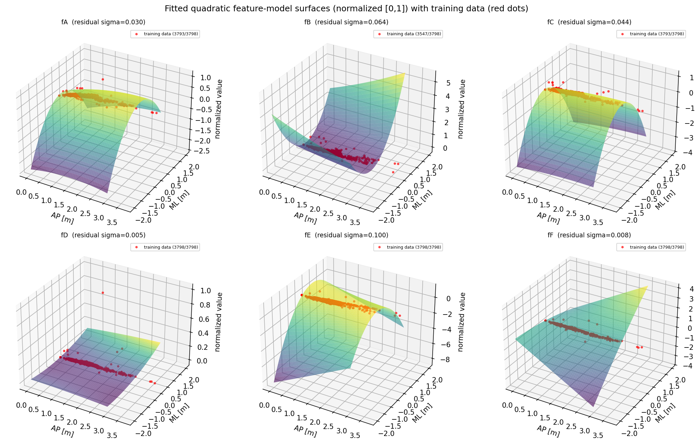
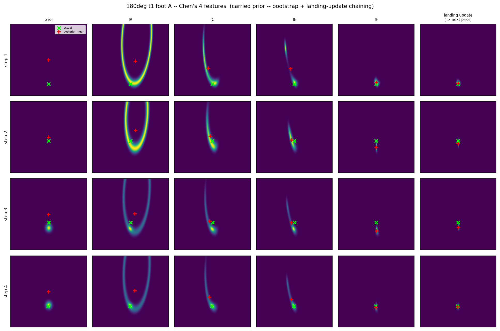
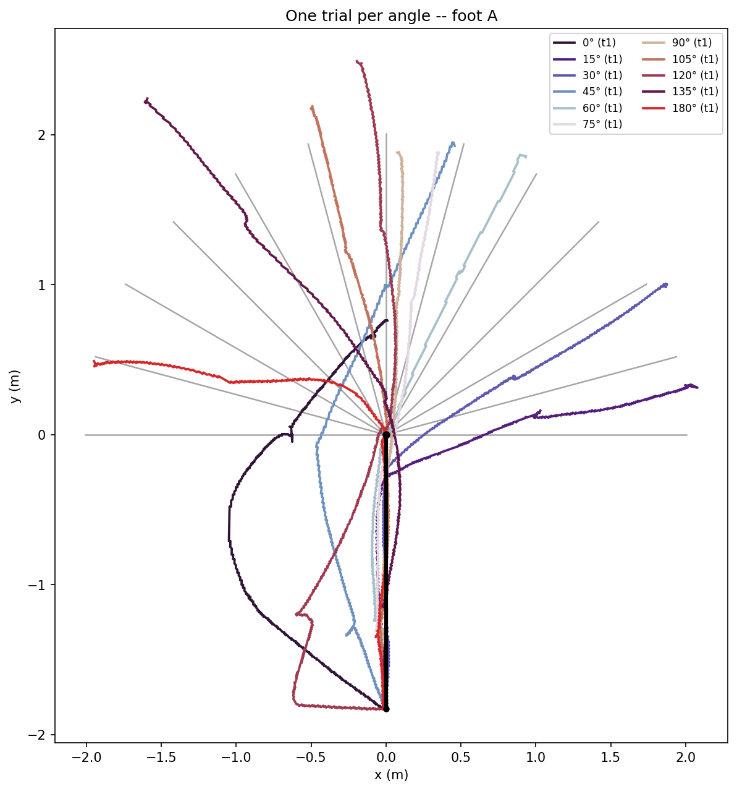
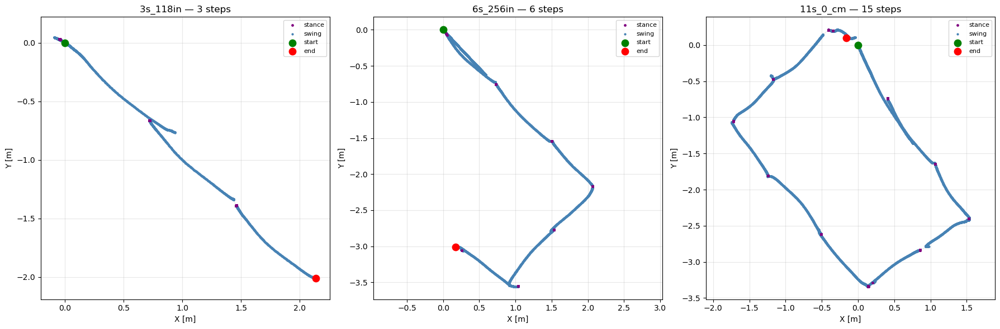

Predicting where the foot will land, using a single IMU on the foot.
This is ongoing work for my master's, it is not published. What's here is where the project is right now,
and it keeps changing as I collect more trials.
Abstract
This ongoing work focuses on using biomechanical cues to predict the final landing location of the human foot,
so that the prediction can be fed to a prosthetic controller before the foot actually lands. Everything runs off one
IMU on the heel, so there's no motion capture lab needed.
Prosthetics react after the foot lands, which is too late to set up for the step.
Powered prosthetic ankles and exoskeletons need to set their stiffness and trajectory before heel strike.
If they wait for ground contact and then react, they lose push-off energy and stability [2]. Lower limb amputees also fall at
nearly twice the rate of people their age, a lot of the time during turns and other transitions. A controller that knows
where the foot is going to land could adjust ahead of time.
A single IMU on the shoe is the natural sensor for this: it's light, cheap and you can wear it all day. Every time the foot
is flat on the ground it is (briefly) not moving, and that zero velocity moment can be used to stop the IMU's drift from
growing [3, 4]. Other people have predicted foot placement using eye tracking [5], cameras [6], deep learning on multiple
sensors [7] and step length models [8]. Chen et al. [9] came up with the approach closest to what I want: a Bayesian
predictor that uses features from a heel IMU during the swing.
Chen et al. found 6 biomechanical cues during the swing that are strong predictors of the next foot placement.
As the foot swings, a few moments in the motion say a lot about where it will land. Chen et al. [9] proposed six:
Cue
What it is
fA
Forward (AP) velocity peak
fB
Sideways (ML) velocity peak
fC
Vertical velocity peak
fD
Highest point of the foot
fE
Forward position at the highest point
fF
Sideways position at the highest point
To use them, each cue gets fit as a quadratic surface over where the foot actually landed. I generated these fits from my own
step data: every step is normalized, and the fit tells you what value of the cue you'd expect for any landing spot.

Quadratic fits for the 6 cues against landing position. Red dots are training steps (3,798 steps), x and y are where the foot landed (forward and sideways).
The prediction itself works on a grid of possible landing spots. It starts with a guess (the prior), and every time a cue shows
up during the swing, the grid gets updated and the guess narrows down.
The IMU also tells us where the foot actually landed, and that's extra information we can use.
I track the foot with an error-state Kalman filter and zero velocity updates, so at every heel strike I know where the foot
landed. Chen et al.'s method doesn't use this. My extension: after each step, treat the measured landing spot as one more
update on the grid, and carry that corrected position forward as the starting guess for the next step. So each step's
prediction starts from a better place than the last one.

The guess sharpens as the swing goes on. Each row is one step of a 180° turn. Left to right: the starting guess, then each cue as it arrives, then the landing update that becomes the next step's guess. Green × is where the foot really landed, red + is the prediction.
Right now, it predicts landing spots on turns it has never seen to within about 12 cm.
I walked paths with turns from 0° to 180°, tracked every step with the IMU, trained on the 0° to 135° turns and then tested
on the 180° turns, which the model never saw. Using the 4 cue subset from Chen et al. (fA, fC, fE, fF) actually did better than all 6.
~12 cm
mean landing error, 180° turns (4 cues)
~17 cm
mean landing error with all 6 cues
3,798
training steps, both feet

Walking trials from 0° to 180° turns, tracked by my IMU pipeline (one trial per angle shown).

Checking the tracker on a taped course: about 2.5% distance error on a straight walk, and about 10 in of drift after a full 15 step loop.
Next, I want to close the loop and move the sensor off the prosthetic.
One filter: predict each step during the swing, correct it at heel strike, carry it forward. This is in progress.
Hip or thigh IMU: on an amputee, a foot IMU would sit on the prosthetic itself, so the device would be predicting from its own motion. Moving the sensor up the leg avoids that.
Learning based models: compare LSTMs and other sequence models against the Bayesian approach.
Embedded hardware: check timing, noise and latency on the kind of hardware a prosthetic would actually use.
References
M. R. Islam, X. Shen, and E. Sazonov, "Sensors and machine learning methods for intent detection in lower-limb prosthetic devices: a review," IEEE Sensors J., vol. 25, no. 12, pp. 21054–21066, 2025.
K. Bhakta et al., "Continuous-context, user-independent, real-time intent recognition for powered lower-limb prostheses," J. Biomech. Eng., vol. 147, 2025.
E. Foxlin, "Pedestrian tracking with shoe-mounted inertial sensors," IEEE Comput. Graph. Appl., vol. 25, no. 6, pp. 38–46, 2005.
J. R. Rebula, L. V. Ojeda, P. G. Adamczyk, and A. D. Kuo, "Measurement of foot placement and its variability with inertial sensors," Gait & Posture, vol. 36, no. 4, pp. 657–660, 2012.
K. Zhang et al., "Foot placement prediction for assistive walking by fusing sequential 3D gaze and environmental context," IEEE Robot. Autom. Lett., vol. 6, no. 2, pp. 2509–2516, 2021.
C. Lim, J. Baek, J. Han, G. Lee, and W. Nam, "Real-time prediction of foot placement and step height using stereo vision enhanced by ground object awareness," Technologies, vol. 13, p. 399, 2025.
S.-W. Lee and A. Asbeck, "A deep learning-based approach for foot placement prediction," IEEE Robot. Autom. Lett., preprint, June 2023.
S. Sahoo et al., "Prediction of step length using neuro-fuzzy approach suitable for prosthesis control," IEEE Trans. Instrum. Meas., vol. 69, no. 8, pp. 5658–5665, 2020.
X. Chen, K. Zhang, H. Liu, Y. Leng, and C. Fu, "A probability distribution model-based approach for foot placement prediction in the early swing phase with a wearable IMU sensor," IEEE Trans. Neural Syst. Rehabil. Eng., vol. 29, pp. 2595–2606, 2021.